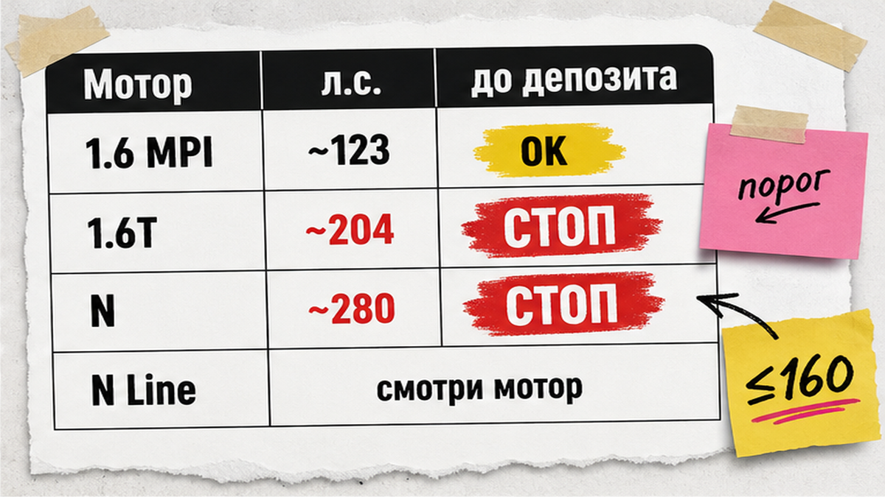
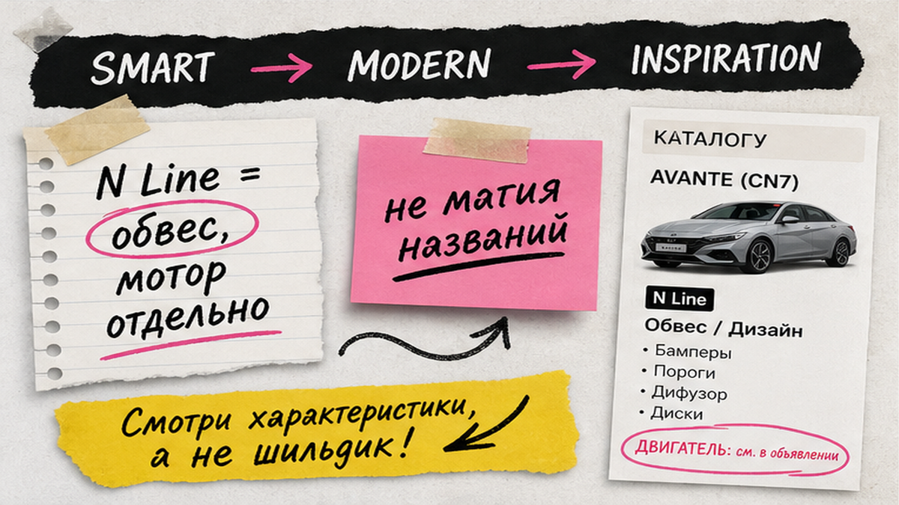
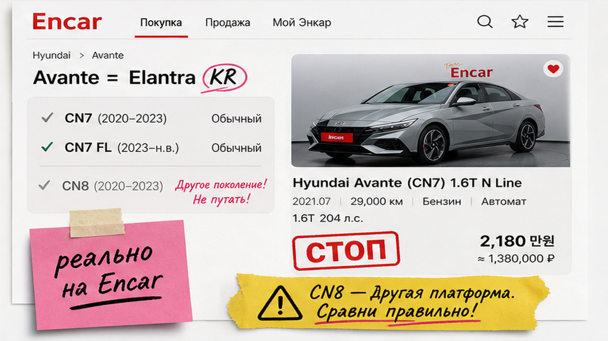

Человек после продажи Соляриса открывает Encar, видит чёрную Avante N-Line "почти новая, 1000 км" и уже готов кинуть депозит за "спорт". Типичная ошибка: на фото блеск, а в карточке 1.6T около 204 л.с. или N около 280 – и льготный утильсбор улетает. Плюс непонятные Smart/Modern/Inspiration и коды X/W на схеме кузова. Ниже – как выбрать хендай аванте из кореи до депозита: мощность, комплектации и чеклист проверок. После гайда у вас короткий список из 2–3 лотов и понятный путь через Владивосток.
TL;DR / Быстрый инсайт: Сначала смотрите документальную мощность: цель ≤160 л.с. (обычно 1.6 MPI ~123). Турбо ~204 и N ~280 отсекайте до перевода. N Line часто про обвес, мотор проверяйте отдельно. Депозит – только после VIN, Performance Check без X на силовых, страховой истории и видеоосмотра. Смету "под ключ" запрашивайте в каталоге, без самодельного калькулятора пошлин.
Avante на корейском рынке – это та же линейка, что за рубежом чаще зовут Elantra. На практике на Encar сейчас основной объём импорта – поколение CN7 и рестайлинг. А вот сюрприз: 26 июня 2026 на Busan Mobility Show Hyundai уже показал All-New Avante 8-го поколения, продажи в Корее обещают на III квартал 2026. Не путайте рекламу шоу с лотом, который реально можно заказать сегодня.
Мы в Авто-Сейлс из Владивостока везём такие машины под заказ. Голос простой: не влюбляйтесь в N-Line на фото – сначала цифра л.с. и схема кузова, потом деньги.

Боль новичка – коммерческий утильсбор из-за мощности. На пальцах: утильсбор зависит в том числе от лошадиных сил в документах. Практики ориентируются на порог ≤160 л.с. для более щадящего сценария. Друг из Владивостока обычно останавливает ровно здесь: "Сначала мощность и лист, потом деньги". Суммы утиля в статье не публикуем – актуальный расчёт только в каталоге на дату запроса.
| Мотор / линия | Ориентир л.с. | Для новичка до депозита |
|---|---|---|
| 1.6 MPI | ~123 | Ок: обычно в зоне ≤160 л.с. |
| 1.6 Turbo | ~204 | Стоп, если цель – льготный сценарий |
| N | ~280 | Стоп для "тихого" семейного заказа |
| N Line (обвес) | смотри мотор | Может быть и 123, и турбо – читайте карточку |
Сделайте: выпишите л.с. из карточки лота до любой переписки про бронь. Не делайте: покупать "спорт" вслепую по фото бампера. Например, N Line на рейлингах не равен двигателю N.

Комплектации на корейской витрине звучат красиво, но для покупателя из РФ это просто уровни оснащения. База → середина → топ. N Line – чаще про внешность и салон, не про автоматический "турбо-паспорт".
Сделайте: выберите трим под бюджет и список нужных опций, а не под хэштег. Не делайте: доплачивать за название, если вам нужен спокойный 1.6 без турбо.

В голове путаница: "Elantra или Avante?" На пальцах: Avante – корейское имя той же модели. В карточке Encar чаще увидите Avante CN7. Новое 8-е поколение уже показали на шоу, но массовые лоты под заказ из Кореи пока крутятся вокруг доступного CN7/рестайлинга.
Сделайте: фильтр Hyundai Avante + бензин 1.6, цель мощности ≤160 л.с. Не делайте: ждать "ту самую новую с билборда", если вам нужна машина в ближайшие недели.
Страх "кота в мешке" закрывается пакетом, а не скрином салона. Performance Check – схема кузова с кодами. X на лонжеронах и стойках = стоп. W на силовых = усиленный осмотр. Дальше – Insurance History в карточке и при необходимости отчёт Carhistory по VIN (отсев проката/такси и крупных выплат – эвристика практиков, не магия).
Глубокий разбор Trust Encar vs Carhistory мы уже разобрали отдельно – здесь модель-специфичный минимум для Avante. Подробный гайд: проверка корейского авто до депозита.
Схема до депозита:
Лот Avante на Encar → мощность ≤160 л.с. → трим без сюрпризов → VIN → Performance Check (нет X на силовых) → страховая история / Carhistory → видеоосмотр → смета "под ключ" → депозит
Сделайте: требуйте пакет целиком. Не делайте: переводить "за очередь", пока нет VIN и схемы. На практике красивый N-Line с X на лонжероне – самый дорогой урок новичка.
Импорт кажется "только для своих". По шагам всё прозрачно:
Ориентиры сроков у разных игроков плавают (в отзывах встречается порядка 20–45 дней до хаба) – обещать "точные дни" нельзя: порт, судно и очередь на документы живут своей жизнью.
Актуальные лоты и расчёт "под ключ" – в каталоге avto-sales125.ru. Уточнения по конкретному VIN – в Telegram @avtosales125. Форм на этой странице нет: бронь и цифры живут в каталоге и переписке.
Сделайте: держите в голове цепочку Пусан → Владивосток → ваш город. Не делайте: путать цену лота с финальной сметой.
Критерий результата простой: есть 2–3 лота в льготной зоне мощности, без X на силовых, с понятным тримом; депозит не платится, пока нет VIN, схемы кузова, страховой истории и видеоосмотра; смета запрошена в каталоге.
Сделайте: идите по чеклисту сверху вниз. Не делайте: "закрывать глаза" ради красивого цвета кузова.
Нужен подбор без самостоятельной возни с вонами – откройте каталог Авто-Сейлс и уточните Avante под ваш бюджет. Офис во Владивостоке: Днепровская 40а, стр. 4 – хаб логистики, таможни и выдачи по России.
Материал проверен: Редакция Авто-Сейлс – эксперты по авто под заказ из Японии, Кореи и Китая (Владивосток).
Достоверность: факты по комплектациям и мощностям сверены с каталогом Дром (CN7 FL), практическими гидами по Avante из Кореи (EIMCAR, OnlyJPCars, AZWAY), разборами Performance Check / кодов X–W и живыми кейсами заказа через Encar; анонс All-New Avante – Busan Mobility Show, 26.06.2026. Актуальные сметы и утильсбор – только в каталоге на дату запроса.
Это одна линейка: в Корее модель зовут Avante, за рубежом чаще Elantra. На Encar ищите Avante и сверяйте поколение (сейчас массово CN7), а не маркетинговое имя из рекламы.
Технически лот существует, но ~204 л.с. обычно выбивают из льготной зоны по мощности. Если цель – спокойный ввоз без сюрприза по утилю, сначала берите 1.6 MPI ~123 л.с. и считайте смету в каталоге.
Сделайте скрин карточки лота с указанием л.с. и сравните с договором и будущим ЭПТС. Не делайте ставку только на подпись "N Line" – откройте именно цифру мощности.
Для первого заказа чаще проще бензин 1.6. Газовые версии требуют отдельной проверки оборудования и сервиса у вас в городе. Если рассматриваете LPG – заложите осмотр и смету обслуживания до депозита.
X на силовых элементах – стоп для депозита. Ищите другой лот или усиливайте осмотр только если осознанно берёте риск и понимаете ремонт. Чеклист важнее "уникального цвета".
Откройте 5–7 лотов Avante 1.6, выпишите мощность и трим, отсейте всё выше 160 л.с. Затем запросите пакет проверок и письменную смету "под ключ" в каталоге Авто-Сейлс – без форм на странице статьи.